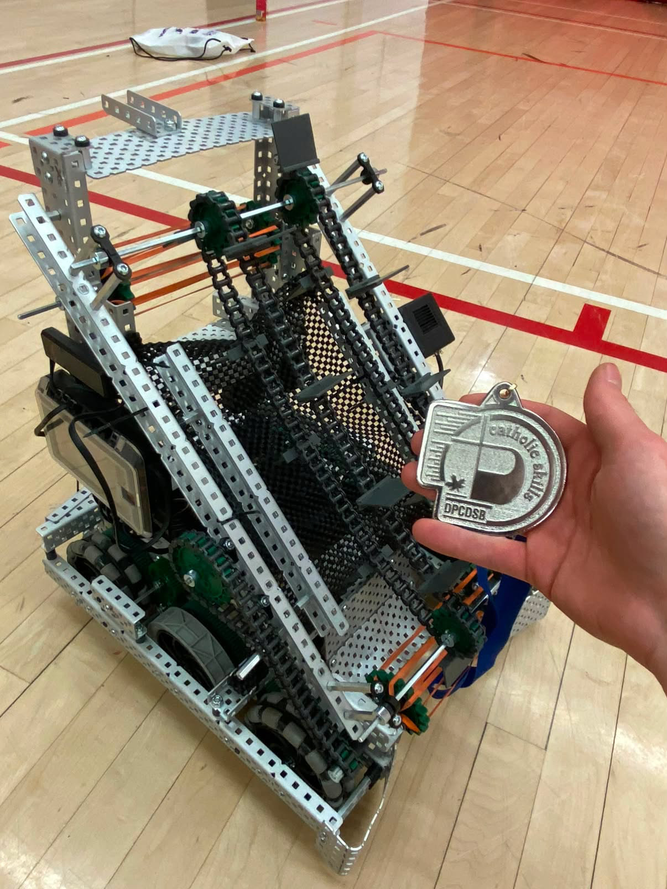

VEX Robotics · Competition Build
Competition Ball-Intake Robot
Swerve-drive base · chain-driven ball intake · medal winner, Catholic Skills

Overview
A VEX competition robot built to collect balls from the floor and lift them into a basket. The base uses a swerve-drive configuration for full mobility around the field, while a chain-and-sprocket conveyor lined with angled flaps carries balls up an internal ramp and into the scoring basket.
How It Works
- Drivetrain: Swerve-drive base, giving the robot full directional mobility on the competition field.
- Intake mechanism: A chain-and-sprocket conveyor with angled flaps, lifting balls from floor level up an internal ramp toward the basket.
- Control: Fully remote-controlled — I drove it myself during competition.
Result
The robot placed at the Catholic Skills competition, earning a medal for its performance.